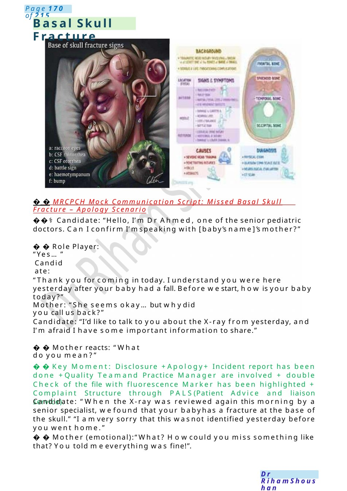
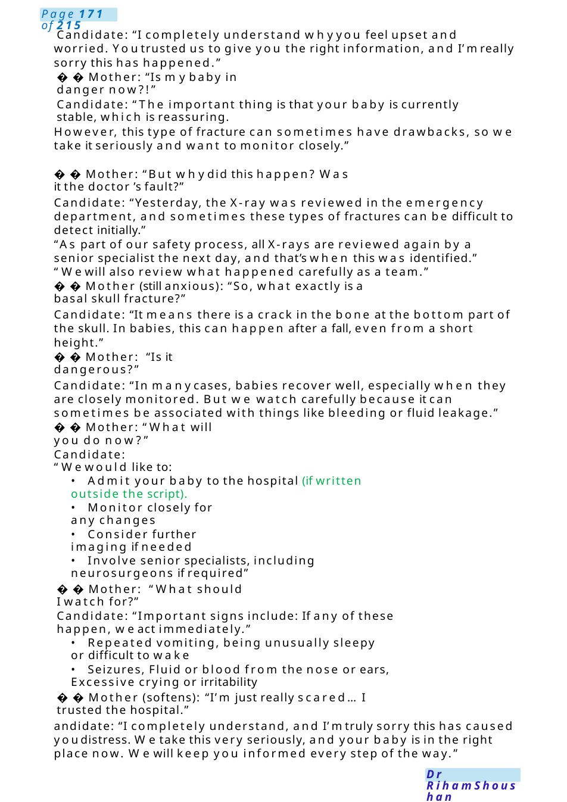
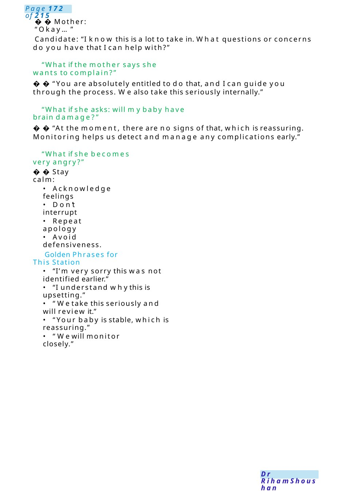
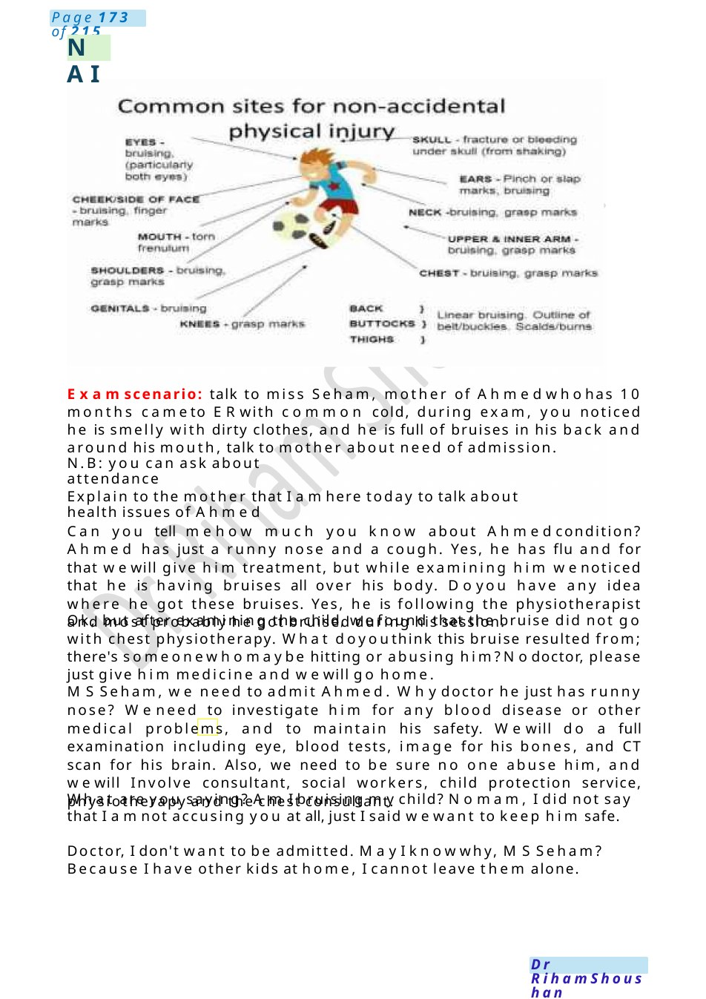

Basal Skull Fracture
MRCPCH Mock Communication Script: Missed Basal Skull Fracture – Apology Scenario ⚕️ Candidate: “Hello, I’m Dr Ahmed, one of the senior pediatric doctors. Can I confirm I’mspeaking with [baby’s name]’s mother?”
Scenario Summary
MRCPCH Mock Communication Script: Missed Basal Skull Fracture – Apology Scenario ⚕️ Candidate: “Hello, I’m Dr Ahmed, one of the senior pediatric doctors. Can I confirm I’mspeaking with [baby’s name]’s mother?”
Full Original Scenario

Basal Skull Fracture
MRCPCH Mock Communication Script: Missed Basal Skull Fracture – Apology Scenario
⚕️ Candidate: “Hello, I’m Dr Ahmed, one of the senior pediatric doctors. Can I confirm I’mspeaking with [baby’s name]’s mother?”
Role Player: “Yes...”
Candidate:
“Thank you for coming in today. I understand you were here yesterday after your baby had a fall. Before westart, how is your baby today?”
Mother: “She seems okay...but whydid you call us back?”
Candidate: “I’d like to talk to you about the X-ray from yesterday, and I’m afraid I have some important information to share.”
Mother reacts: “What do you mean?”
Key Moment: Disclosure +Apology+ Incident report has been done +Quality Teamand Practice Manager are involved + double Check of the file with fluorescence Marker has been highlighted + Complaint Structure through PALS(Patient Advice and liaison service).
Candidate: “When the X-ray was reviewed again this morning by a senior specialist, wefound that your babyhas a fracture at the base of the skull.” “I amvery sorry that this wasnot identified yesterday before you went home.”
Mother (emotional):“What? Howcould you miss something like that? You told meeverything was fine!”.

Candidate: “I completely understand whyyou feel upset and worried. Youtrusted us to give you the right information, and I’mreally sorry this has happened.”
Mother: “Is mybaby in danger now?!”
Candidate: “The important thing is that your baby is currently stable, which is reassuring.
However, this type of fracture can sometimes have drawbacks, so we take it seriously and want to monitor closely.”
Mother: “But whydid this happen? Was it the doctor ’s fault?”
Candidate: “Yesterday, the X-ray was reviewed in the emergency department, and sometimes these types of fractures can be difficult to detect initially.”
“As part of our safety process, all X-rays are reviewed again by a senior specialist the next day, and that’s when this was identified.” “Wewill also review what happened carefully as a team.”
Mother (still anxious): “So, what exactly is a basal skull fracture?”
Candidate: “It means there is a crack in the bone at the bottom part of the skull. In babies, this can happen after a fall, even from a short height.”
Mother: “Is it dangerous?”
Candidate: “In manycases, babies recover well, especially when they are closely monitored. But we watch carefully because it can sometimes be associated with things like bleeding or fluid leakage.”
Mother: “What will you do now?”
Candidate: “Wewould like to:
- Admit your baby to the hospital (if written outside the script).
- Monitor closely for any changes
- Consider further imaging if needed
- Involve senior specialists, including neurosurgeons if required”
Mother: “What should I watch for?”
Candidate: “Important signs include: If any of these happen, weact immediately.”
- Repeated vomiting, being unusually sleepy or difficult to wake
- Seizures, Fluid or blood from the nose or ears, Excessive crying or irritability
Mother (softens): “I’m just really scared... I trusted the hospital.”
andidate: “I completely understand, and I’mtruly sorry this has caused youdistress. Wetake this very seriously, and your baby is in the right place now. Wewill keep you informed every step of the way.”

Mother: “Okay...”
Candidate: “I know this is a lot to take in. What questions or concerns do you have that I can help with?”
❓“What if the mother says she wants to complain?”
“You are absolutely entitled to do that, and I can guide you through the process. Wealso take this seriously internally.”
❓“What if she asks: will mybaby have brain damage?”
“At the moment, there are no signs of that, which is reassuring. Monitoring helps us detect and manage any complications early.”
❓“What if she becomes very angry?”
Stay calm:
- Acknowledge feelings
- Don’t interrupt
- Repeat apology
- Avoid defensiveness.
- Golden Phrases for This Station
- “I’m very sorry this was not identified earlier.”
- “I understand whythis is upsetting.”
- “Wetake this seriously and will review it.”
- “Your baby is stable, which is reassuring.”
- “Wewill monitor closely.”

NAI
Examscenario: talk to miss Seham, mother of Ahmedwhohas 10 months cameto ERwith common cold, during exam, you noticed he is smelly with dirty clothes, and he is full of bruises in his back and around his mouth, talk to mother about need of admission.
N.B: you can ask about attendance
Explain to the mother that I amhere today to talk about health issues of Ahmed
Can you tell mehow much you know about Ahmedcondition? Ahmed has just a runny nose and a cough. Yes, he has flu and for that wewill give him treatment, but while examining him wenoticed that he is having bruises all over his body. Doyou have any idea where he got these bruises. Yes, he is following the physiotherapist and most probably he got bruised during his session.
Ok, but after examining the child, wefound that the bruise did not go with chest physiotherapy. What doyouthink this bruise resulted from; there's someonewhomaybe hitting or abusing him?Nodoctor, please just give him medicine and wewill go home.
MSSeham, we need to admit Ahmed. Whydoctor he just has runny nose? Weneed to investigate him for any blood disease or other medical problems, and to maintain his safety. Wewill do a full examination including eye, blood tests, image for his bones, and CT scan for his brain. Also, we need to be sure no one abuse him, and wewill Involve consultant, social workers, child protection service, physiotherapy and the chest consultant.
What are you saying? AmI bruising mychild? Nomam, I did not say that I amnot accusing you at all, just I said wewant to keep him safe.
Doctor, I don't want to be admitted. MayI knowwhy, MSSeham? Because I have other kids at home, I cannot leave them alone.